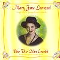

Celtic Lyrics Corner > Artists & Groups > Mary Jane Lamond > Bho Thìr Nan Craobh > O, Tha Mise Fo Ghruaimean
|  | O, Tha Mise Fo Ghruaimean |
| Credits : | Traditional |
| Appears On : | Bho Thìr Nan Craobh |
| Language : | Gàidhlig (Scottish Gaelic) |
| Lyrics : | English Translation : |
| Sèist : | Chorus (after each verse) : |
| O, tha mise fo gruaimean | Oh I am unhappy |
| 'S beag ioghnadh ged a ghluaisinn duilich | There's little wonder I go about sadly |
| 'S fad' tha mise o I mo chàirdean | I am from from Iona, land of my people |
| Far 'n d' rinn mi 'fàgail uile | Where I left them all behind |
| O, tha mise fo gruaimean | Oh I am unhappy |
| 'S iomadh rud a tha 's an àit' seo | There are many things in this place |
| Nach robh 's an àit' a dh'fhàg sinne | That were not in the land that we left |
| Cuileagan uaine 's an là ann | Flies that are green in the daytime |
| 'S air an oidhch' a fàs 'nan teine | And at night they turn into fire |
| 'S ged is liath ceann an Dròbhair | Though the Drover, who came over with us |
| Thàinig nall còmhla ruinne | Has a head that's gray with age |
| Bha na suaimpeachain cho dlùth ann | The swamps here are so thick |
| 'S gu'n dh'éibh e, "Tha'n dùthaich 'na teine" | That he cried out, "The country is on fire" |
| Cha chluinn sibh cuthag no gug-gùg ann | You won't hear the cuckoo or his call here |
| Maduinn chiùin air bràigh glinne | On a calm morning on the hillside |
| Ach drumaireachd na coilich-ruadha | Only the drumming of the red grouse cock |
| 'S siud a' fuaim tha fuathach dhuinne | And that's an unpleasant sound to us |